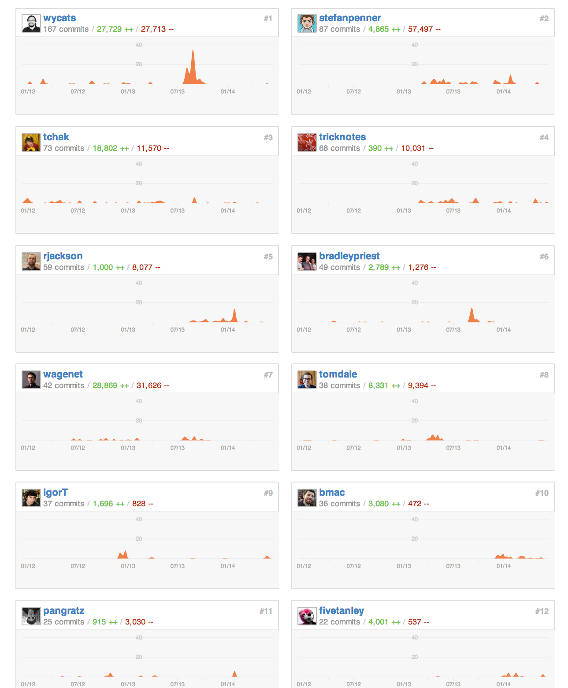

Ember Data
Model Fragments
The Other Kind of Embedded Record
Created by Steven Lindberg at Lytics
Relations are hard
Really hard. Ugh.

Love, not hate.
Embedded Records
Support since waaay back.
Embedding
{
"post": {
"id": 1,
"title": "Rails is omakase",
"comments": [
{
"id": "1",
"body": "Rails is unagi"
}, {
"id": "2",
"body": "Omakase O_o"
}
]
}
}
Sideloading
{
"post": {
"id": 1,
"title": "Rails is omakase",
"comments": ["1", "2"]
},
"comments": [
{
"id": "1",
"body": "Rails is unagi"
}, {
"id": "2",
"body": "Omakase O_o"
}
]
}
Type 1
- Really just two-way sideloading
- Records are first-class; must have unique identifier
- Currently supported by the
DS.EmbeddedRecordsMixin
Type 2
- Persistence is entirely dependent on a 'primary' record
- Currently not supported by Ember Data
- Some APIs are going to be backed by document stores (MongoDB, RethinkDB), which make it natural to use nested documents
- Implementations require that embedded records are given fake identifiers — annoying, but not that big of a deal
Dependent State
- Identifier-less embedded records are just complex properties
- Natural that an embedded record's state is linked to its owner record's state
- Important for driving UI behavior
Model Fragments
A ‘fragment’ quacks like a model, only lacks persistence logic
App.Name = DS.ModelFragment.extend({
first : DS.attr('string'),
last : DS.attr('string')
});
var name = ...; // instance of `App.Name`
name.save(); // => "TypeError: undefined is not a function"
A model can have two types of fragment properties: single fragment or an array of fragments
App.Person = DS.Model.extend({
name : DS.hasOneFragment('name'),
addresses : DS.hasManyFragments('address')
});
App.Name = DS.ModelFragment.extend({
first : DS.attr('string'),
last : DS.attr('string')
});
App.Address = DS.ModelFragment.extend({
street : DS.attr('string'),
city : DS.attr('string'),
region : DS.attr('string'),
country : DS.attr('string')
});
Fragments are always tied to a single owner record that cannot change (except when newly created)
var person1 = store.getById('person', 1);
var person2 = store.getById('person', 2);
person1.set('name', person2.get('name')); // => "Fragments can only belong to one owner, try copying instead"
person1.set('name', person2.get('name').copy()); // fragments implement `Ember.Copyable`
person1.set('name', store.createFragment({
first : 'Leah',
last : 'Sibler'
}));
Fragments are manipulated like normal records, and propagate state changes up to the owner record
var person = store.getById('person', 1);
var name = person.get('name');
person.get('isDirty'); // => false
name.get('isDirty'); // => false
name.set('first', 'Rumpelstiltskin');
person.get('isDirty'); // => true
name.get('isDirty'); // => true
Changes to arrays (additions, deletions, reordering) affect owner record’s state
var person = store.getById('person', 1);
var addresses = person.get('addresses');
person.get('isDirty'); // => false
addresses.get('isDirty'); // => false
addresses.get('length'); // 3
addresses.popObject();
person.get('isDirty'); // => true
addresses.get('isDirty'); // => true
addresses.get('length'); // 2
Fragments are registered on the container as models, so can have their own serializers
App.Name = DS.ModelFragment.extend({
first : DS.attr('string'),
last : DS.attr('string')
});
App.NameSerializer = DS.RESTSerializer.extend({
attrs: {
first : 'given',
last : 'surname'
}
});
Serializing the owner record serializes fragments, so save()ing a record saves its fragments
var person = store.getById('person', 1);
person.serialize(); /* =>
{
"name": {
"first": "Tyrion",
"last": "Lannister"
},
"address": {
"street": "1 Sky Cell",
"city": "Eyre",
"region": "Vale of Arryn",
"country": "Westeros"
}
}
*/
Supports rollback() at fragment and record level
var person = store.getById('person', 1);
var name = person.get('name');
name.set('first', 'Alex');
person.rollback();
person.get('isDirty'); // => false
name.get('isDirty'); // => false
name.set('first', 'Robert');
name.rollback();
person.get('isDirty'); // => false
name.get('isDirty'); // => false
Yes, fragments can be nested
App.Transaction = DS.Model.extend({
purchases: DS.hasManyFragments('purchase'),
...
});
App.Purchase = DS.ModelFragment.extend({
amount : DS.hasOneFragment('amount'),
quantity : DS.attr('number'),
...
});
App.Amount = DS.ModelFragment.extend({
currency : DS.attr('string'),
value : DS.attr('string')
});
Approach
- Plugin that adds to
DSnamespace - Reuse most of
DS.Modelby extracting bits that don’t deal with persistence - Create simplified state machine that notifies owner of state changes
- Create state-aware array that notifies owner record of state changes
- The good: leverages existing codebase, fragments are familiar, can have their own serializers
- The bad: relies heavily on private APIs
Limitations
Merging Arrays of Fragments
- How to reconcile array of fragment objects with JSON response?
- What constitutes an identical fragment? No way to know without unique identifier.
- Possible solution:
mergehook?
No Filtered Record Arrays
- No 'master list' of fragments of a particular type like with
DS.Model - Can’t display a list of options to choose from without implementing special
copy()glue code
Observer Execution Order
- Accessing owner record attributes may return stale data
- Product of computed property caching and how
DS.Modelproperties are dependent ondataproperty
TODOs and Caveats
- Fragments cannot (currently) have relations to full models
- In-flight state of fragments (currently) doesn’t exist
- Behavior won’t always mimic
DS.hasManyandDS.belongsTowhen they become async - Performance???
Alternative Approach
Serializer + Relationship Dependency
- Treating embedded records as full models isn’t the end of the world
-
Relationship state dependence is a problem (and valuable) for normal relationships
- Declarative: on relationship property options
- Through model hooks
- Has advantage of pushing 'truth' into the serializer, and therefore serialized state